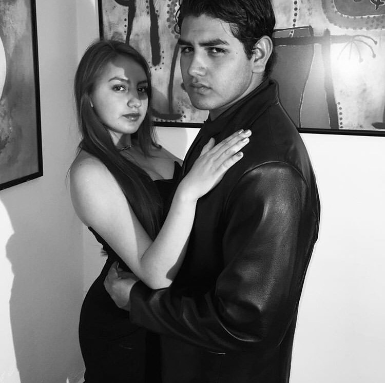
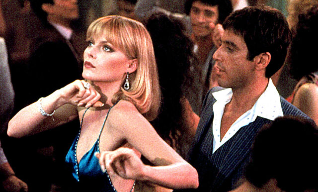
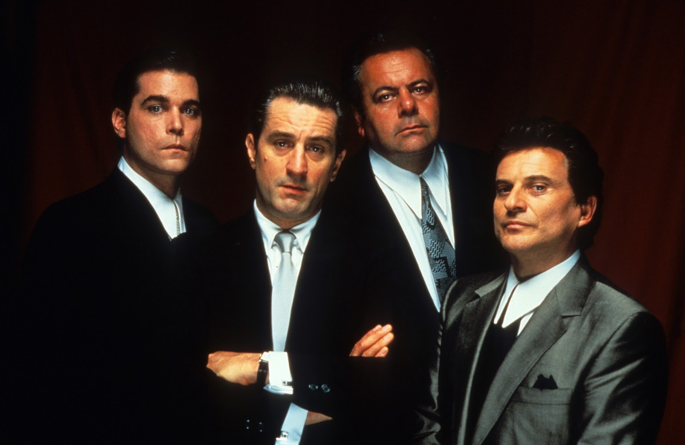

¡Hola! Mi nombre es Fernanda Hernández y soy estudiante del Centro de Estudios Científicos y Tecnológicos No. 3 "Estanislao Ramírez Ruiz". Soy una muchacha carismática, inteligente, divertida, sociable, honesta, amable y extrovertida, etc etc, y con respecto a mis malos puntos, soy muy enojona, poco tolerante, distraída e incluso floja muchas veces, entre otras características más.
Tengo dos hermanos, mi hermano se llama Fernando Hernández y mi hermana se llama Regina Hernández, mi mami se llama Yessica y en cuanto a mi papá, yo considero que tengo dos padres, mi papá biológico Fernando y mi papá Eleazar, el esposo de mi mamá. 
No soy una persona de muchos amigos, tengo bastantes compañeros y aunque me llevo muy bien con ellos no los considero mis amigos porque aún no existe un lazo de amor y confianza entre nosotros. Sin embargo a quienes considero mis amigos los considero mis hermanos, ellos me apoyan, me aconsejan, me escuchan, me corrigen, me comprenden, me cuidan y me enseñan, los considero mi familia.
Es algo curioso que nunca le he agradado a mis compañeros de clase, al menos no a la mayoría, en ninguna etapa de mi vida, tanto en el kinder, la primaria, la secundaria y ahora en mi grupo actual de preparatoria, por lo regular las personas con las que mejor me llevo son las personas mayores, soy muy buena para escuchar y me gusta escuchar las anecdotas que los adultos me cuentan, además de que aprendo de ellos, aún así nunca he culpado a mis compañeros de clase porque yo creo que si no les agrado es porque no les he brindado la oportunidad de conocerme, aunque no tengo problemas con ellos pues igual tengo firme la idea de que al no meterte con nadie no hay razones para tener problemas.
Me gusta mucho el cine, soy fan de Al Pacino y Robert de Niro, mi sueño más grande en la vida es ser actriz, desde que era pequeña soñaba con actuar en una película o una serie de televisión.
 
Sin embargo quiero ser ingeniero, es por eso que estoy estudiando en ésta hermosa insitución, siempre he pensado que uno debe tener un respaldo y después lanzarse a hacer lo que le apasiona.